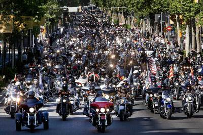

HARLEY-DAVIDSON
Un estilo de vida
El rugir de una leyenda
HISTORIA
La compañía Harley-Davidson Motor Company, fue fundada en 1903 por William Harley y los hermanos Arthur, Walter y William Davidson en un pequeño garaje de Milwaukee, Wisconsin EU, lanzando su primer modelo en septiembre de 1904.
En ese año se construyeron 3 motocicletas con motores de 10 pulgadas cúbicas, monocilíndricos, de tres caballos de potencia. En 1909 fue introducido el motor de dos cilindros en V con ángulo de inclinación de 45 grados, de 49.5 pulgadas cúbicas que producía siete caballos de potencia y lograba alcanzar una velocidad tope de 60 millas por hora el cual caracteriza desde entonces el famoso motor V-Twin. En 1920 Harley-Davidson se consolidó como el fabricante de motocicletas más grande del mundo.
Las dos guerras mundiales ayudaron a la Harley-Davidson a difundir su producto a través del mundo y así hacer crecer la fábrica a niveles de producción de 90 mil unidades por año. Logrando sobrepasar la Gran Depresión (1929) Harley se posicionó como el fabricante de motocicletas más sólido.
Harley-Davidson se convierte en el “rey del camino” en la década de los 50 y 60. El rock and roll a través de Elvis Presley, James Dean y otros artistas convierten estas máquinas en el símbolo de esta generación. Hollywood se encarga de llevar al público la imagen de “rebeldes” o pandilleros. Sus vestimentas de chaquetas de cuero con estoperoles, camisetas arremangadas y los famosos jeans, se convierten en la indumentaria de los motociclistas.
CURIOSIDADES
Los datos desconocidos de las motos Harley-Davidson que te dejarán pasmado
Harley-Davidson tiene marcado 2020 como un año trascendental para su estrategia de futuro. La marca estadounidense busca la continuidad de sus modelos clásicos pero apostando al mismo tiempo con determinación por productos que le permitan conquistar nuevos mercado y clientes, empezando por la inminente comercialización de la LiveWire, su primera moto eléctrica. En su sede de Milwaukee, qué mejor escenario, ha presentado la gama para el próximo curso, aunque las grandes novedades llegarán en los próximos meses
Desde sus inicios en un garaje, al uso militar de sus motocicletas, pasando por una importante crisis que casi supone su cierre, las motos Harley-Davidson cumplen este año 117 años circulando por el asfalto de medio mundo. Ese espíritu de libertad y el particular sonido de su motor cuentan con cientos de seguidores que, más allá de la conducción de una moto, ven en ella el reflejo de un estilo de vida que lleva la autenticidad por bandera.
Las curiosidades más sorprendentes sobre las motocicletas Harley-Davidson
-
1 – 1904, lanzamiento comercial del primer modelo Harley-Davidson
Utilizando un chasis de bicicleta con un motor de 400 cc, sus artífices desarrollaron 3 unidades en 1903 y un año después apareció para el público. Poco tenía que ver con los modelos actuales pero ya apuntaba maneras: transmisión por correa de cuero, sin embrague ni freno delantero y, lo más sorprendente, el carburador se construyó partiendo de una lata de tomate. ¡Comenzaba la aventura!
-
2 – De 1907 a 1914 la producción se vuelve imparable
Pronto pasan de fabricar 150 unidades a una producción de 16.284 motos Harley-Davidson en apenas siete años. Durante ese periodo apuestan por la innovación mecánica y estética; se introducen diferentes colores como el gris Renault o el negro Piano, aparece la horquilla delantera Sager o se aumenta la cilindrada a 30 pulgadas cúbicas con 4 caballos más de potencia en el Modelo 5 Single.
Hasta 1914, año tras año se han lanzado nuevas motos ya con pedal de arranque, pedales para el embrague y el freno, transmisión con dos velocidades, con mejora de los frenos, aumento de la anchura de los guardabarros y cubrecadenas, entre otros detalles.
-
3 – En 1917 Harley-Davidson fue el proveedor oficial del ejército de EE. UU. para la I Guerra Mundial
Estados Unidos entró en la I Guerra Mundial y escogió a las motos Harley-Davidson para equipar a su ejército. La marca respondió fabricando más de 20.000 motocicletas de uso militar para sus aliados.
-
4 – Entre 1936 y 1958, construcción de la obra maestra de Wiliam S. Harley y caída de la reputación de la marca
Harley-Davidson vivió entre 1936 y 1958 uno de los momentos más gloriosos en la construcción de motocicletas que marcarían la esencia de la marca. De esta época es su motor Knucklehead, base de los Big Twin posteriores, que en 1948 se sustituye por el Panhead y ya en 1955 todos los modelos conocidos ahora como Hydra Glide son de 1200 cc.
Las motos Harley-Davidson cada vez cuentan con más presencia en las películas de Hollywood de la época, como es el caso de Salvaje, con un Marlon Brando soberbio. De hecho, la marca se apoya en celebridades de la talla de Elvis Prestley o James Dean para relanzar la imagen de la marca. Precisamente fue su aparición en proyectos cinematográficos lo que ocasionó una asociación negativa del motero, como alguien violento o peligroso.
-
5 – En 1970 se bate un nuevo récord de velocidad: Más de 424 km/h
El piloto Cal Rayborn sería el elegido para conducir un modelo especial de moto Harley-Davidson conocido como Godzilla con el que batiría un nuevo récord, superando los 424 km/h.
-
6 – Una red de más 2000 concesionarios en todo el mundo, con una parada obligada para el motero: Las Vegas
Durante sus 117 años de historia, Harley-Davidson ha sabido llevar su leyenda y espíritu a todos los puntos del planeta. Prueba de ello es que en la actualidad cuenta con más de 2000 concesionarios donde adquirir motos y otros artículos de la marca. Como no podía ser de otro modo, su concesionario más grande está situado en Las Vegas. Allí se compran y alquilan modelos de sus motos, con un catálogo casi infinito. Además, en sus instalaciones también se ofrecen clases de conducción para adecuar la elección de la moto a la habilidad de conductor y así disfrutar más de la experiencia.
-
7 – HOG, Harley Owners Group, el club de motociclismo más grande del mundo.
Con más de 2 millones de miembros, el Harley Owners Group asocia auténticos enamorados de estas motos que comparten el espíritu Harley. Un encuentro siempre repleto de emociones con un amplio calendario de concentraciones moteras y eventos por todo el mundo.
